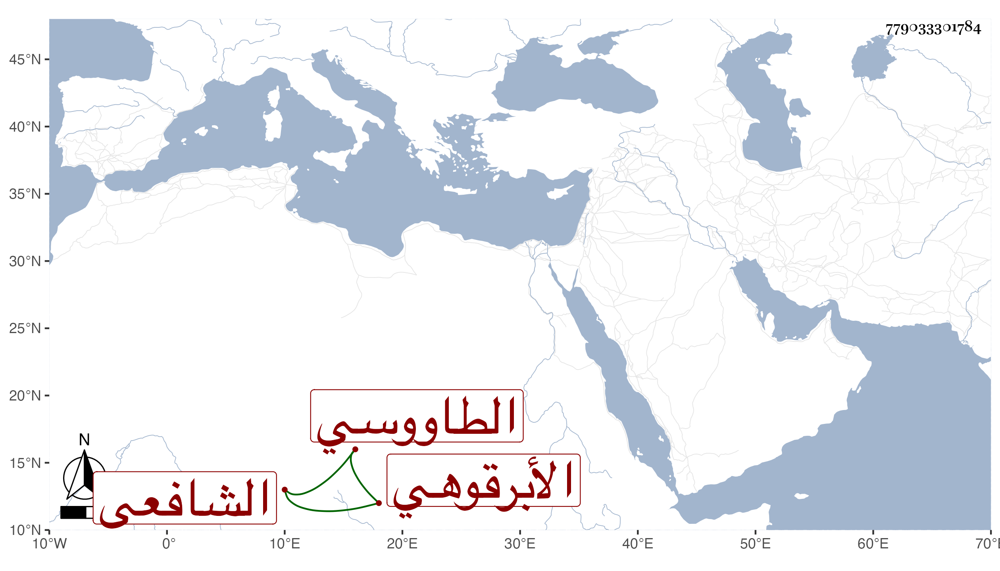

0902Sakhawi.DawLamic.ITO20230111-ara1.EIS1600.779033301784
Biography ID: 779033301784
1063
محمد بن أحمد بن عبد الله بن عبد القادر بن عبد الحق القطب أبو الخير بن النور الأبرقوهي الطاووسي الشافعي الماضي أبوه . أخذ عن أبيه الصرف الفارسي للعلامة الجرجاني ومقدمتي ابن الحاجب الكافية مع ما كتبه عليها والشافية مع شرحها للنيسابوري وبعض الحاوي مع حله وبحث في ذلك ودقق مع حفظه لمتونها وأذن له أبوه في الإفتاء وألبسه الخرقة وأذن له في إلباسها وذلك في سنة خمسين . ومات صاحب الترجمة بعد ذلك في حياة أبيه . ورأيت السيد العلاء ابن عفيف الدين يثني عليه ويتأسف على فقده رحمه الله وإيانا .
